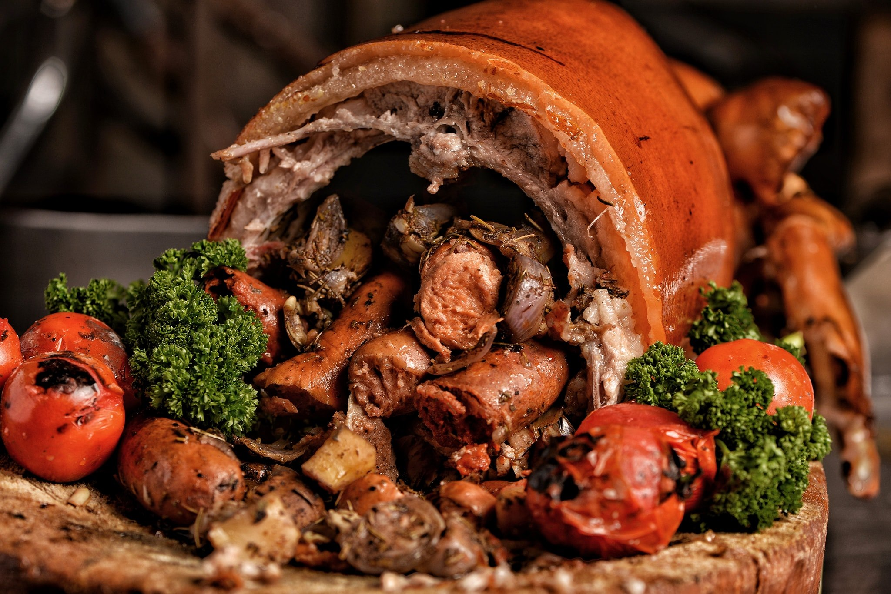

Flavorful Delights
The Philippines is a haven for food enthusiasts, offering a diverse range of delicious and flavorful cuisines. Indulge in the mouthwatering dishes that define Filipino culinary excellence.

Adobo: Experience the savory goodness of Adobo, a classic Filipino dish featuring marinated meats in a soy-vinegar sauce.

Sinigang: Delight in the sour and savory flavors of Sinigang, a comforting tamarind-based soup with various meats and vegetables.
Lechon: Savor the crispy and succulent goodness of Lechon, a roasted whole pig that is a festive centerpiece in Filipino celebrations.
Explore the culinary wonders of the Philippines and treat your taste buds to these unforgettable delights.